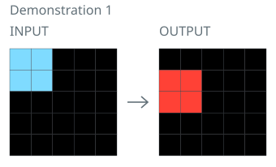
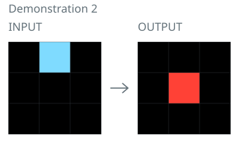
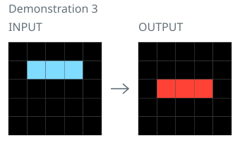
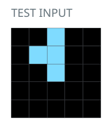
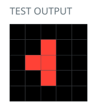
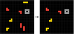
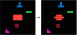

A large-scale dataset for conceptual understanding
ConceptARC at ScaleStudying Conceptual Understanding in Reasoning Models
Do models capture shared concepts across different reasoning tasks?
Philipp Mondorf1,2Adrien Deliège3Solim LeGris4Claas Beger5Ryan Yi5Barbara Plank1,2Brenden Lake6,†Todd M. Gureckis4,†
1 LMU Munich2 Munich Center for Machine Learning (MCML)3 University of Liège4 New York University5 Santa Fe Institute6 Princeton University† Equal supervision
The Abstraction and Reasoning Corpus (Chollet, 2019) presents a small number of input-output examples from which a solver must infer an underlying transformation rule and apply it to unseen inputs. It studies abstraction within a task: the solver must identify the structure shared across a few concrete examples and infer a rule that generalizes beyond them.
Abstraction within one task
Learning from the demonstrations



Apply the same rule

→
?New output

Reveal the output and rule
Move the light-blue shape down one row and recolor it red.
Original ARC task a79310a0 ↗ · All three demonstrations and the test input, shown in full.
B
ConceptARC: different tasks share a concept.
ConceptARC (Moskvichev, Odouard, and Mitchell, 2023) groups 160 hand-crafted ARC-style tasks into 16 spatial and semantic concepts. The benchmark was created to test how well solvers understand these concepts and generalize them across varied problems. The tasks below use different rules, but both depend on what lies inside a boundary.
Abstraction across different tasks
Shared conceptInside and Outside
Original ConceptARC · Inside & Outside · Task 7
Count the markers inside.
Encode the counts as a row of blue cells followed by green cells.
A rule tells you what to do. A concept captures structure that different rules share.
ConceptARC
Benchmark limitations
Only ten tasks per concept. This small task set limits the diversity of transformation rules available for assessing whether models represent shared conceptual structure across tasks.
Only three test queries per task. Correct answers on just three inputs provide limited evidence that a model can apply the underlying rule consistently to new examples.
Possible training-data contamination. The tasks have been public since 2023, so recent models may have encountered them during training. This complicates the interpretation of their performance as generalization to unseen tasks.
How many tasks explore one concept?
Inside and Outside · one of 16 concepts
10hand-crafted tasks per concept
× 16 concepts160 tasks
One filled square = one task.
Select a filled square to look inside a task. Keyboard: use arrow keys, then Enter.
The same task count applies to each of the 16 concepts.
Original ConceptARC
Inside and Outside · Task 1
One task, one rule. Learn from input–output pairs, then predict outputs for new inputs.
02 / Automatically generating new ConceptARC tasks
ConceptARC at Scale
To address the above limitations, we introduce a compositional task generator for automatically creating new ConceptARC tasks.
The key idea behind our task generator is to construct tasks from three basic components: (i) a grid layout, which specifies the input scene—for instance, the types of objects present and their spatial arrangement; (ii) a selector, which specifies the objects or grid regions to be transformed; and (iii) an action, which specifies how the selected objects or grid regions are transformed.
This compositional structure allows us to generate a large variety of tasks from a limited set of grid layouts, selectors, and actions.
The same layout and recoloring action can express different concepts by changing which objects are selected.View full-size figure ↗
For example, the layout in the figure above contains a hollow yellow rectangle surrounded by red single-cell markers. Pairing it with a selector for objects inside the rectangle and an action that recolors them green produces the Inside & Outside task at the upper right. Replacing the selector with one that selects objects above a reference object produces the Above and Below task at the lower right.
Each concept acts as a semantic gate by constraining the allowable combinations of layouts, selectors, and actions so that generated tasks preserve its defining semantics.
Layouts, selectors, and actions are implemented as functions in a shared domain-specific language (DSL) for constructing and manipulating grid scenes. A task program combines the chosen layout, selector, and action together with their parameters, as shown in the figure above.
To generate an input-output example, the program constructs an input scene according to the layout and its permitted variability, applies the selector to identify the relevant entities, and uses the action to compute the output.
03 / The dataset
ConceptARC-100
Using our compositional generator, we create 100 new tasks per concept across ConceptARC’s 16 concepts: 1,600 tasks, ten times as many as the original benchmark. Each task is represented by a program that can generate many input–output examples of the same rule.
Following ARC’s few-shot format, each task has three support demonstrations and ten test queries—over three times as many test queries as original ConceptARC.
3support demonstrations to infer the rule
→
10test queries to apply the rule
Testing more inputs provides a more reliable estimate of whether a model has inferred the underlying rule rather than exploiting incidental colors or arrangements.
We manually review every task for consistent transformations and a rule that can be inferred unambiguously from its demonstrations. Each task also records metadata about its layout, selector, and action, enabling fine-grained analysis of models’ task representations.
We evaluate eight open-weight large reasoning models (LRMs) and two small models trained from scratch across concepts and test queries. Behavioral performance alone does not reveal which abstractions models have formed, so we also analyze their internal task representations.
Loading interactive results…
01
Performance varies across models—and concepts.
With three demonstrations per task, Qwen3.5-27B leads the evaluated models at 63.48% query accuracy. Spatial relations are generally easier; comparison, ordering, and counting remain challenging.
Model comparison
Query accuracy (%)
Select a model to explore its concepts.
Qwen3.5-27B
By concept
All model and concept values, including uncertainty
Evaluation setting & original benchmark comparison
Query accuracy requires an exact match in grid dimensions and cell values. The main comparison uses three support demonstrations and ten test queries per task. LRMs receive text representations of grids and run in reasoning mode; GPT-OSS uses high reasoning effort.
VARC (18M parameters) and TRM (7M) are each trained from scratch on the support examples across all 1,600 tasks. Each test input is paired with its learned task embedding. This evaluates generalization to new inputs within a task, rather than adaptation to previously unseen tasks.
Across the eight LRMs, average accuracy is 54.39% on original ConceptARC and 31.18% on ConceptARC-100. The original benchmark has been public since 2023, so training-data contamination cannot be ruled out.
02
Solving one example is not solving a rule consistently.
We count how many tasks have at least one, at least two, ..., up to all ten test queries solved correctly. Across all models, this count declines steadily as we require more correct answers per task. For instance, Qwen3.5-27B solves at least one query in 93.21% of tasks, but all ten in only 23.17%.
Tasks with at least X of 10 queries correct
Task consistency
More demonstrations help
What changes with 24 examples instead of 3?
Retraining VARC with more demonstrations improves accuracy and consistency on the same test queries, suggesting that limited task-specific training data is an important bottleneck.
Query accuracy
17.59%→77.4%
Tasks solved 10/10
2%→58.3%
A separate training setting with eight times as many support examples.
How to read the consistency curves
Each value is the fraction of tasks with at least the selected number of correct queries.
We manually reviewed every task to check that its rule is applied consistently and can be inferred unambiguously from the support examples. Human error remains possible, but we also find that 68.88% of tasks are fully solved by at least one model. This provides additional evidence that many failures reflect model limitations rather than unsolvable queries.
We report means and standard deviations across three random seeds. The robustness export includes all three complete LRM runs (seeds 42, 44, and 46), each covering all 1,600 tasks and ten queries per task; means weight seeds equally and SDs are sample standard deviations.
03
Representations organize around transformation operations.
Accuracy and consistency measure how well models solve tasks. Next, we analyze how models represent tasks internally. Specifically, we ask whether models capture structure shared across different tasks.
To characterize how models organize tasks in representation space, we use metadata from our task generator specifying the layout, selector, and action, together with each task’s concept category. For each of these four label sets, we measure whether tasks sharing a label are closer in representation space than tasks with different labels.
For example, let denote the representation of task with action label . We measure the probability that a task with the same action label is closer to than a task with a different action label, using cosine distance:
We evaluate all eligible comparisons, excluding self-comparisons and assigning half credit to ties. Scores are averaged across tasks within each label, then across labels. A score of 0.5 corresponds to chance-level separation; higher values indicate stronger organization according to the corresponding property.
Qwen3.5-27B
Across transformer layers
Separation probability: how often is a task closer to another task with the same label than to one with a different label? 50% is chance. Higher values mean stronger organization, not higher solving accuracy.
Qwen3.5-27B organizes tasks by layout in early layers and by action in later layers. In early layers, tasks are organized primarily by grid layout. As information propagates through the model, this organization shifts: separation by layout decreases, while separation by action rises from 61.6% at layer 0 to a peak of 73.4% at layer 39. Action-based separation subsequently declines but remains the strongest through the final layer, where it reaches 70.5%. Across all layers, tasks sharing an action are more closely organized than tasks sharing a concept, while separation by selector is comparatively weak.
VARC’s task embeddings show similar organization by action. VARC learns task-embedding vectors during training and uses them to provide information about task rules at inference time. We treat these vectors as task representations and compute the same separation probabilities for the embedding layer. As with Qwen3.5-27B, VARC’s representations are organized predominantly by action, with separation probabilities of 57.1% for layout, 54.8% for selector, 86.2% for action, and 70.8% for concept.
Representation analysis details
For Qwen3.5-27B, we extract residual-stream states at the closing bracket of the third demonstration's output, average across eight support sets per task, and subtract the across-task mean at each layer. VARC's comparison uses task vectors learned during training and reused with test inputs.
The metric compares cosine distances, excludes self-comparisons, and gives half credit to ties. Scores are averaged within each label, then across labels. Action separation peaks at 73.4% in Qwen3.5-27B's layer 39, then declines to 70.5% at the final layer while remaining the strongest property. VARC’s action separation is 86.2%.
VARC's task embedding visualization below also reveals finer semantic structure within operation clusters, including distinctions such as inside versus outside and above versus below.
Do visually similar tasks still separate by action?
In the analysis above, Qwen3.5-27B groups tasks mainly by grid layout in its early layers. By the middle layers, separation is strongest for action. Tasks that share an action can also share visual properties. For example, two corner-removal tasks may both change only a few cells. How much action separation remains when we account for these similarities?
Consider a reference task that removes corners. We compare it with two tasks, one that also removes corners and one that performs a different action. At each layer, we use cosine distance to determine which task’s representation is closer to the reference. Action separation measures how often the task with the same action is closer. Ties receive half credit, and 50% is chance. For the visual controls, we require the two comparison tasks to have similar grid features. The reference task can look different from both.
Higher visual distance 75th percentile
Corner removal

Object removal
Lower visual distance 25th percentile

Corner removalPatterned recoloring
Each arrow shows one task’s input and output. In the higher-distance pair, one input has four large rectangles and the other has small, scattered objects. In the lower-distance pair, the objects occupy the same positions in both inputs. One task removes the corners of the central red rectangle, while the other adds yellow stripes to it.
How we measure visual distance. We describe each input grid by its dimensions and the fraction of cells of each color. Across three demonstrations, this gives 42 features. Including the same features for the outputs, plus the number and fraction of cells that change, gives 90. We average across each task’s eight support sets, standardize the features, and adjust for the number of features in each group. A smaller Euclidean distance between two task vectors means their grids are more similar on these measurements.
How we select task pairs. We balance action frequencies and require the two comparison tasks to share a layout family. For each eligible action, we rank pairs by visual distance. The strictest cutoff, q25, keeps approximately the closest quarter of pairs. The q50 and q75 cutoffs keep the closest half and three quarters, respectively. Applying each cutoff to inputs alone or to both inputs and outputs gives six visual matching conditions. Each condition uses the same pairs at every layer.
Qwen3.5-27B action separation across layers
The dashed line shows the original action separation probability. The solid line shows the probability under the selected control. Move the layer slider to see how many percentage points separate the two curves.
Visual matching has its smallest effect near the middle-layer peak. With both inputs and outputs matched at q25, action separation at layer 0 falls from 61.6% to 53.5%, close to chance. At layer 39, it falls from 73.4% to 71.6%, a drop of only 1.8 percentage points. The gap widens again at the final layer, where matching reduces separation from 70.5% to 66.9%.
Both models separate actions more reliably than the visual baseline. The visual baseline reaches 59.96%, above the 50% chance level. Grid appearance therefore carries some information about the action. Qwen3.5-27B reaches 71.59% at layer 39, exceeding the baseline by 11.63 percentage points. VARC reaches 86.4% with matching, close to its original 86.2%. Together, these results suggest that the measured visual properties explain only part of the grouping by action in the models’ representations.
05 / Explore the representation space
A map of learned task structure.
Models represent tasks with the same action similarly, suggesting they abstract these operations across tasks. In the interactive map below, you can explore this structure yourself in VARC’s learned task embeddings. Select nearby points and compare their demonstrations to see how tasks with different rules and concept labels can cluster around a shared transformation operation.
The left enlargement groups tasks that expand object boundaries; the right groups tasks that remove boundary cells. Each cluster contains tasks with different rules and concept labels.
Within a cluster
Finer distinctions remain visible.
Within these groups, subclusters reflect where the operation applies—for example, inside versus outside a region, or above versus below a reference.
Together with the separation analysis, these observations suggest shared representations of transformation operations. UMAP compresses the geometry into two dimensions; this analysis does not establish that the observed structure causes successful reasoning.
Explore the map yourself.
Zoom into a cluster and select nearby points from different concepts. Compare their demonstrations: which transformation do they share, and where do their rules differ?
ConceptARC at Scale creates new tasks around specific concepts and represents each task as a program that can generate many examples. We use it to build ConceptARC-100: 1,600 new, manually reviewed ARC-style tasks across 16 concepts, with three demonstrations and ten test queries per task.
Performance varies across models and concepts, and models often struggle to solve a task’s test queries consistently. Training VARC with more demonstrations substantially improves both accuracy and consistency.
Qwen3.5-27B and VARC represent tasks with the same action similarly, suggesting shared abstractions of transformation operations across different rules and scenarios. Whether they rely on these representations to solve tasks remains an open question worth exploring in future studies.
Citation
@misc{mondorf2026conceptarc,
title = {{ConceptARC} at Scale: Studying Conceptual Understanding in Reasoning Models},
author = {Mondorf, Philipp and Deliège, Adrien and LeGris, Solim and Beger, Claas and Yi, Ryan and Plank, Barbara and Lake, Brenden M. and Gureckis, Todd M.},
year = {2026},
eprint = {2611.06732},
archivePrefix = {arXiv},
primaryClass = {cs.AI},
doi = {10.48550/arXiv.2611.06732},
url = {https://arxiv.org/abs/2611.06732}
}